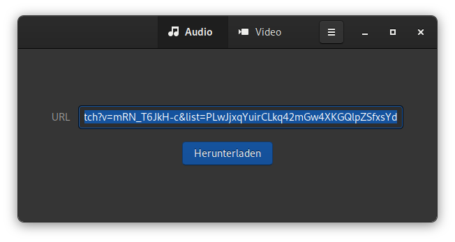
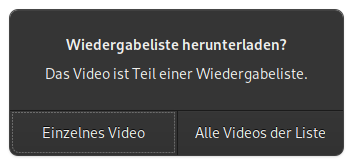
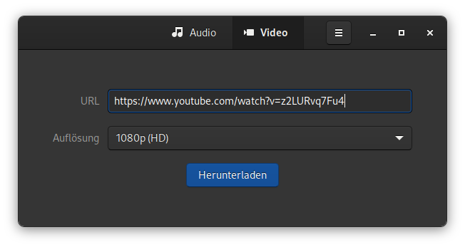
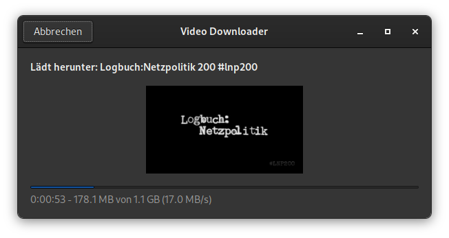

Mit Video Downloader kann man Videos von Websites mit einer einfach zu bedienenden Benutzeroberfläche herunterladen.
Video Downloader bietet die folgenden Funktionen:
Video Downloader basiert auf youtube-dl und unterliegt der GNU GENERAL PUBLIC LICENSE, v3. Der Quellcode ist auf Github verfügbar.
Video Downloader ist als Flatpak, Snap oder auf rpm Paket für Fedora verfügbar.
# Flatpak
flatpak install flathub com.github.unrud.VideoDownloader
# Snap
sudo snap install video-downloader
# RPM
sudo dnf install video-downloaderWenn man nur die Audiospur eines Videos möchte, kann man nach der Vorwahl von Audio einfach den entsprechenden Link in das URL Feld einfügen und auf Herunterladen drücken.

Falls es sich um eine Wiedergabeliste handelt, hat man die Wahl alle oder nur das einzelne Video herunterzuladen.

Möchte man ein Video herunterladen, ist das Vorgehen identisch zum Audio. Zusätzlich kann noch die gewünschte Qualität eingestellt werden.
 
Das Verhalten des Programms kann mit GSettings noch angepasst werden. Das Vorgehen ist auf der Projektseite beschrieben. Ich habe die diese Einstellungen selbst nicht getestet.
Die Voreinstellung für den Download Ordner ist xdg-download/VideoDownloader. Falls man das Ändern möchte, kann ein absoluter Pfad oder ein relativer Pfad wie ~/Downloads/VideoDownloader oder xdg-download/VideoDownloader verwendet werden.
Flatpak
flatpak run --command=gsettings com.github.unrud.VideoDownloader set com.github.unrud.VideoDownloader download-folder '~/VideoDownloader'Snap
snap run --shell video-downloader -c 'gsettings "$@"' '' set com.github.unrud.VideoDownloader download-folder '~/VideoDownloader'Bevorzugt man MPEG Videos anstelle von freien Formaten, wenn beide mit derselben Auflösung und Bildrate verfügbar sind, kann man das auch Ändern.
Flatpak
flatpak run --command=gsettings com.github.unrud.VideoDownloader set com.github.unrud.VideoDownloader prefer-mpeg trueSnap
snap run --shell video-downloader -c 'gsettings "$@"' '' set com.github.unrud.VideoDownloader prefer-mpeg true